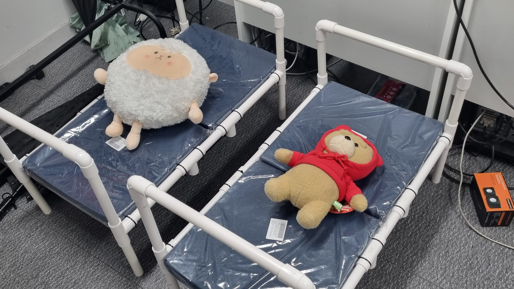
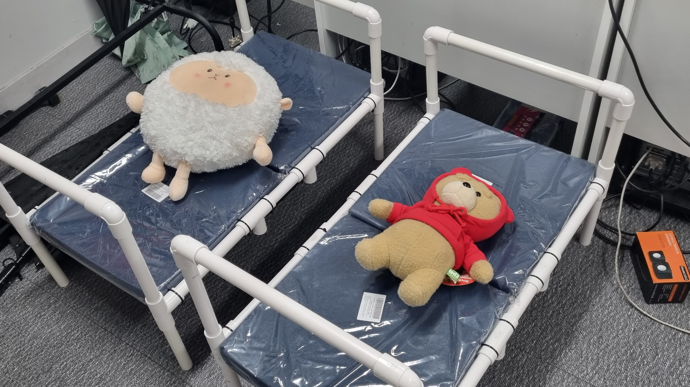

.jpg)
하드웨어🛠뚝딱뚝딱, 모터/센서 제어
그땐 몰랐죠, 침대하나 만들기 이렇게 힘이들 줄은... 그냥 철물점에 갈 걸 그랬어... 야생의 침대(이)가 나타났다!!! 침대 프로토타입 제작은 매우 힘들었다!
인형도 만들어야되지 프레임다음에 지지해줄 뼈대랑 모터집, 라즈베리파이집도 만들어야하지... 생각 이상으로 힘들었던 여정.
.jpg)
.jpg)
.jpg)
일단 인형부터 개조했다. 프로토타입에 비해 몸이 짧은 둥글둥글한 인형이라 겉껍데기를 분리해서 속을 파내고 추를 넣을지말지 정하고 길쭉하게 개조했다.
좀 많이 기괴한 키메라 인형이 됐지만 결과적으로 몸이 길어져서 환자역할을 잘 수행해주었던 것 같다. 인형아 미안해 🙂...
.jpg)
.jpg)
관우는 참 귀엽다. 막내라 그런지 늘 흥미본위인데 눈치도 있고 책임감도 강하다. 경민이는 단순해서 좋다. 그냥 빠르게 단편적인 생각을하고 바로 움직인다. 그래서 둘은 프로토타입 제작을 잘 해냈다.
pvc파이프가 다루기 쉬울 줄 알고 파츠리스트에 넣어두었는데 막상 연결용으로 쓰는 커넥트 3구 5구 등등이 굉장히 엉망이였다. 지름도 안맞고파이프를 구매한 곳에서 샀어야하는데 다른 구매처에서 쓰여있는 수치만 보고 구매했더니 안들어가는 오류가 발생했다.
가장 많이 하던 말이 변순데?였던것 같다. 😣😣😣😣😣😣😣😣😣
결국 파이프 지름을 넓히겠다고 드릴에 갈릴만한 기리를 달아서 조금씩조금씩 갈아냈다.. 결국 해내긴 해냈다.. 대단한 놈들😵
.jpg)
.jpg)
포맥스 품귀 현상
처음에는 파이프가 모자르더니 중간에는 또 아크릴이 모자르고, 나중엔 포맥스가 모잘랐다.
예산은 겁나 초과해놨지, 써야할 부품은 없지... 결국 사비를 털어서 막내가 문구점에 다녀왔고
나중엔 서보모터 범퍼기어를 안정적으로 지지해줄 모터 집도 만들고 라즈베리파이 두대를 보관할 집도 만들었다.
좀 부품 적게들어가는 아이디어를 구상했으면 좋았을텐데, 우리는 경험도없었고 그러면서 용감했다.
.jpg)
.jpg)
범퍼는 김밥처럼 메모리폼 하나를 갈라서 둘둘 말고 절연테이프로 감기로했고, 범퍼기어를 직접 잘라서 제작했다.
약간 원시시대 인간이 불피울 때 하는 짓을 하는것같은 착각도 들었다.
DC모터를 쓰자고 했지만, 결국 우린 서보모터모듈을 사용하게 되었다.
그래도 잘 돌아가니까 괜찮은거 아닌가?😏😏😏😏
.jpg)
.jpg)
처음엔 vnc화면으로 모니터 왔다 갔다 하다가 나중에는 그냥 감압식 lcd패널을 연결해놓고 즉석에서 인스턴트 개발을 했다.
엎어놓은채로 작동테스트를 했을 때는 잘 되다가 막상 프레임에 얹으니 작동이 버벅거리는 부분도 있었고 나름대로 이런저런 시행착오가 많았던것 같다.
경민이 수고했어!!!이제 침대는 쳐다도 보지말자!!!
.jpg)
.jpg)
.jpg)
.jpg) 
